黄色编号为Geometry Top20；未绘制GT实例框。参考轨迹不等于模型实际闭环历史，几何支持不代表真实目标可见。
The brown building on Castle Street to the left of the 12 Castle Street building.
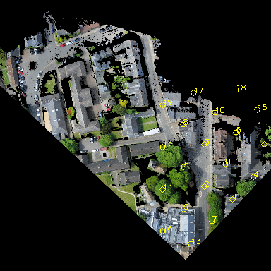
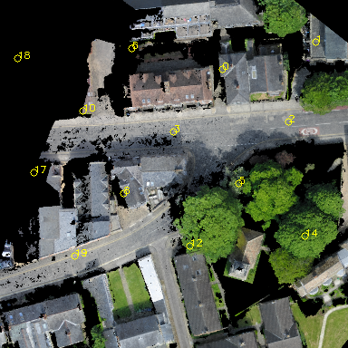
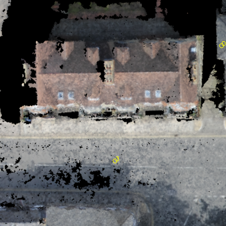
The gray long building behind 14-20 Castle Street on Castle Street.
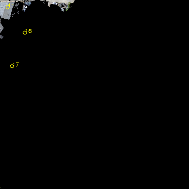
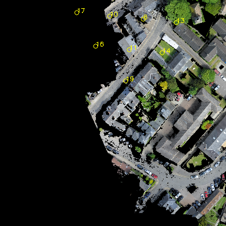
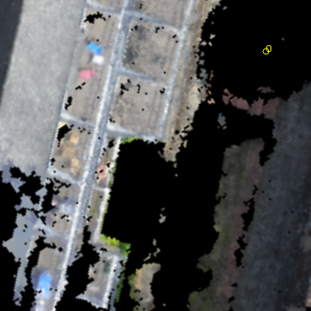
This is a brown-roofed building behind Kettle's Yard Gallery and surrounded by large trees. It is also near buildings with a gray roof on Honey Hill.
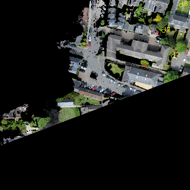
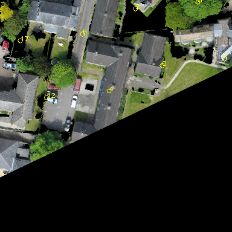
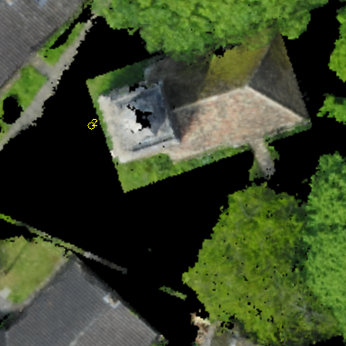
The gray house on St Peter's Street that is at the intersection with Pound Hill.
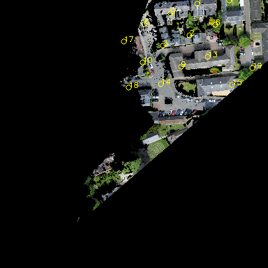
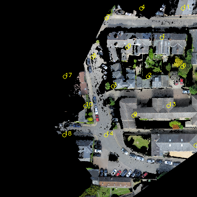
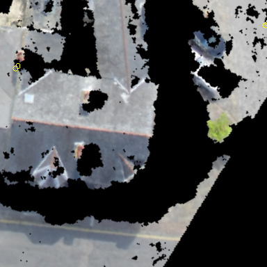